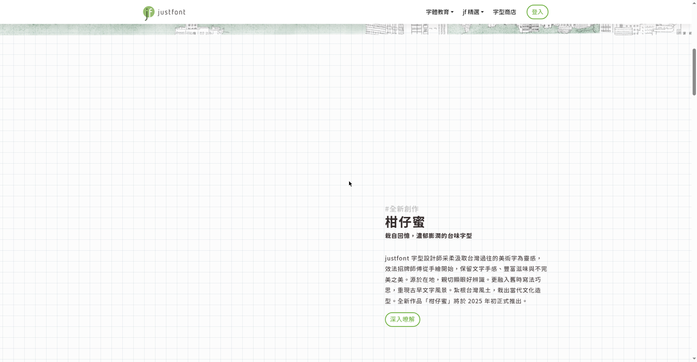

D02-12026-10-11 · 首页 · 实测
一绿到底的首页
全站只有一个强调色。制图纸网格铺满整页，板块模板严格统一，靠滚动描边动画出活泼。
#66AC35 品牌绿
#437223 绿hover
#fcfcfc 纸底
#342c2c 正文
#bfbfbf 标签灰
字体（实测）
| 角色 | 实测字体 |
|---|---|
| 正文 / 导航 UI | 源樣黑體 GenYo Gothic TW 400/500 |
| Hero 竖排标题 | 蘭陽明體 jf-lanyangming 300 + .2em 字距 |
| 全站策略 | 每类页面换一款自家产品 —— 网站本身就是字帖 |
能偷的
- 一绿到底：链接、按钮、hover、区块底全归 #66AC35；meta 信息用灰 —— 屏幕上永远只有一个主角
- 网站即字帖：导航、正文、标题各用一款自家字体，产品自己代言
- 制图纸底纹：30px 浅网格铺满整页，设计师草稿感，成本几乎为零
- 模板严格、表面活泼：板块结构（hashtag→标题→副标→正文→胶囊按钮）一字不差，活泼全靠滚动描边动画
- 胶囊描边按钮 hover 填绿：简单、可拥有感强，全站复用
不要学的
首屏天际线动画约 10 秒才画完 —— 为艺术牺牲首屏信息密度，品牌站可以，转化页不行。竖排大标题只适合中文品牌站。